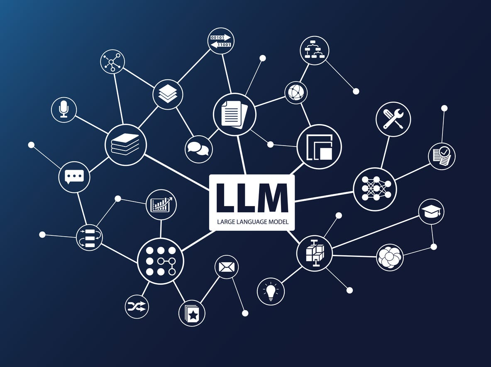

Definition
Large Language Models (LLMs) are advanced AI systems that can understand and generate human-like text. They are trained on vast amounts of data to predict and produce coherent language.
How It Works
LLMs function by processing large datasets to learn patterns in language. They use tokens to represent words and phrases, allowing them to generate text based on context.
Examples
Examples of well-known LLMs include ChatGPT, Gemini, and Claude. These models are capable of tasks such as language translation, summarization, and conversation.
